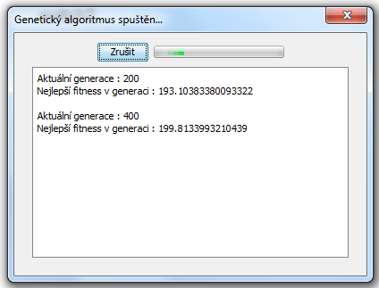

Tutorial 3: Pokročilé funkce
Pokročilé funkce
V tomto tutorialu si povíme nejdříve o funkci Automatické rozmístění.
Automatické rozmístění
Původní myšlenkou automatického rozmístění bylo, že při načtení ulžené sítě, ve které by nebyly informace o poloze prvů, by program síť automaticky rozmístil v ploše. Jelikož není jiná možnost než síť vytvořit v tomto programu, odpadá nutnost síť automaticky rozmisťovat.
Funkce Automatické rozmístění v programu zůstala pro zajímavost.
Jak vyvolat funkci
Nejdříve otevřete nějakou existující síť.
Funkce Automatické rozmístění je přístupná pod pravým tlačítkem myši kdekoliv mimo komponenty pod položkou Automatické rozmístění:

Běh algritmu
Funkce je implementovaná s pomocí Genetického algoritmu a je časově náročná. Po jejím spuštění uvidíte následující obrazovku:
Běh algoritmu může být dlouhý, proto je možné ho kdykoliv přerušit.
Po skončení algoritmu se dialog automaticky zavře a zobrazí se výsledek rozmístění:

Další částí tutorialu je: Telnet pro přístup k virtuálním zařízením.